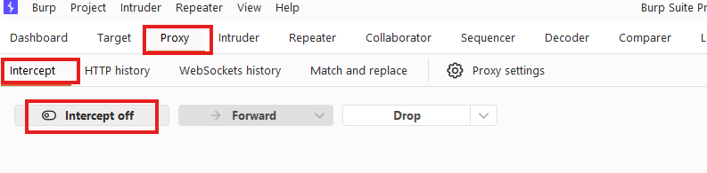

Mise en place du web proxy
Installer Burp et configurer FoxyProxy
Installer Burp Suite Community
Téléchargez la version gratuite sur le site officiel de PortSwigger.
Télécharger Burp CommunityInstaller FoxyProxy dans le navigateur
Extension qui permet de basculer rapidement entre plusieurs configurations proxy.
| Nom / Description | Burp |
| Type | HTTP |
| Hostname | localhost |
| Port | 8080 |
| Username / Password | (optionnels) |

avec l'entrée « Burp » sélectionnable

montrant la configuration « Burp » : HTTP, localhost, 8080
Activer le scope dans Burp Suite
Proxy settings → Scope → cliquez sur Add et ajoutez l'URL de votre cible.

avec la boîte « Add prefix for in-scope URLs »

(boutons Yes / No)
▸ Reconstitution interactive du dialog
You have added an item to Target scope. Do you want Burp Proxy to stop sending out-of-scope items to the history or other Burp tools?
Answering "yes" will avoid accumulating project data for out-of-scope items.
En d'autres termes : SEUL le trafic vers le scope passera dans Burp. Répondre YES évite d'accumuler des données hors-scope dans l'historique.
Désactiver l'intercepteur
L'intercepteur bloque chaque requête pour permettre de la modifier avant de la laisser filer (forward). Pour naviguer normalement, il doit être désactivé.

avec le bouton « Intercept off »